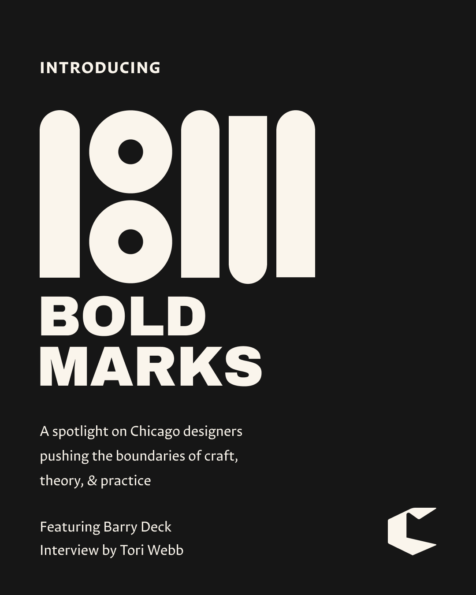
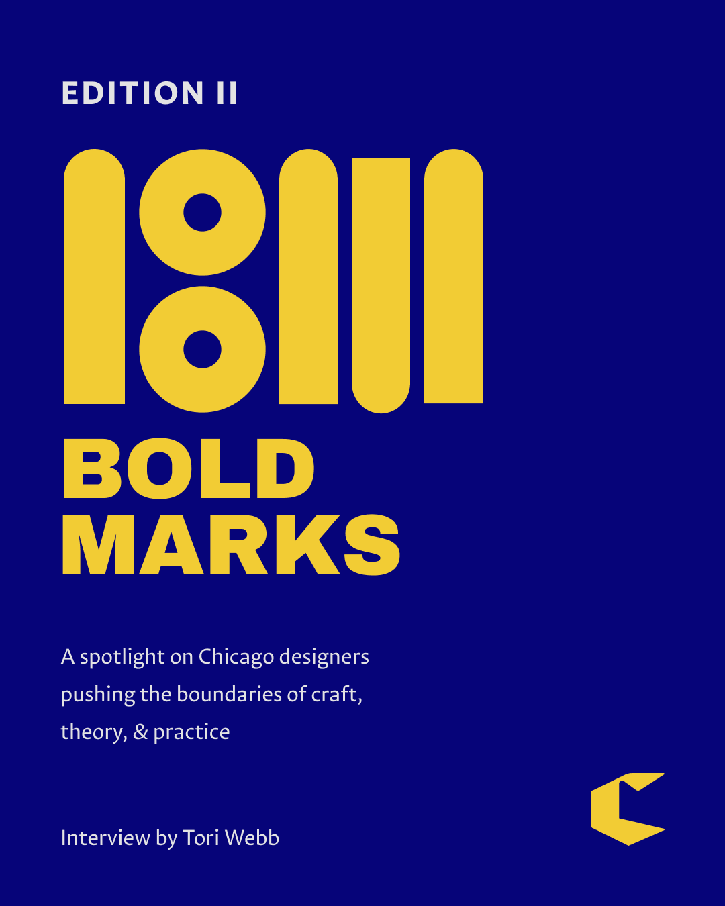
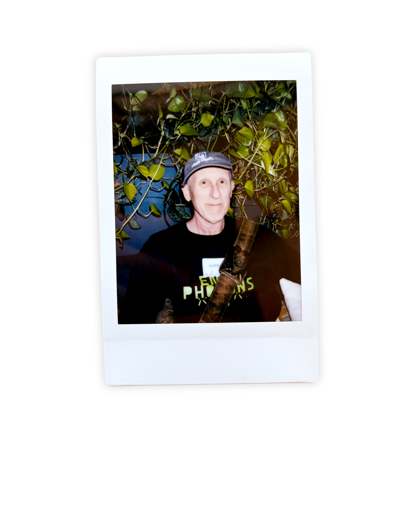
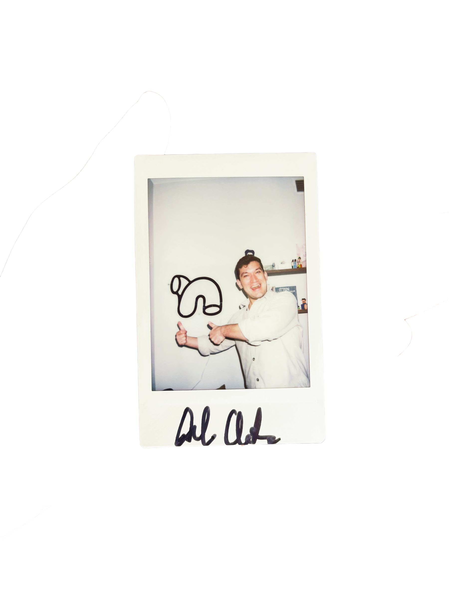
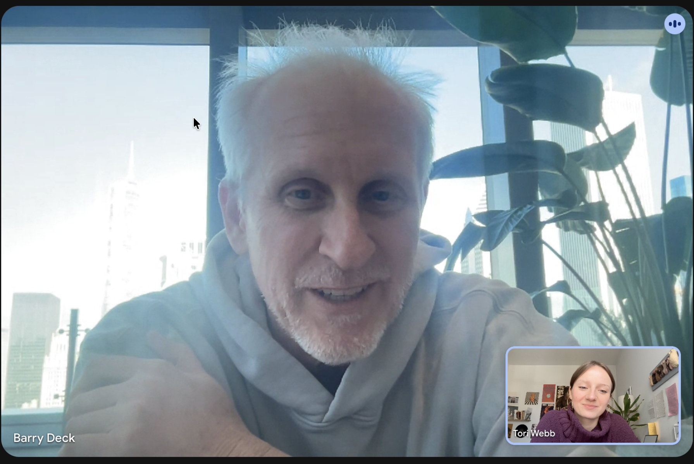
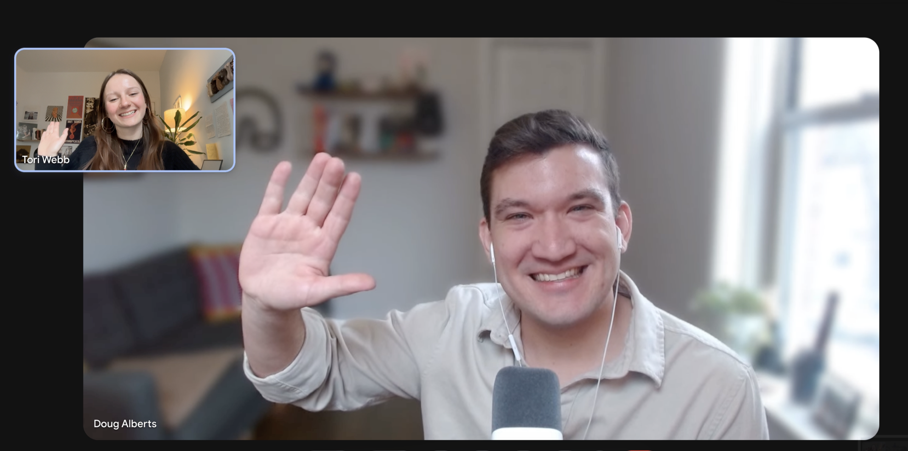

Bold Marks is a spotlight series created for the Chicago Graphic Design Club that highlights artists and designers whose work reflects the values of craft, curiosity, and thoughtful engagement. The series uses interviews and editorial storytelling to celebrate creatives and their contributions to the design community.
Created during my apprenticeship with CGDC, the project brought together branding, editorial design, research, and community engagement. From developing the identity system to conducting interviews and writing articles, the work focused on creating a thoughtful and consistent experience across each feature.





Read the article about Barry Deck here

Read the article about Doug Alberts here

